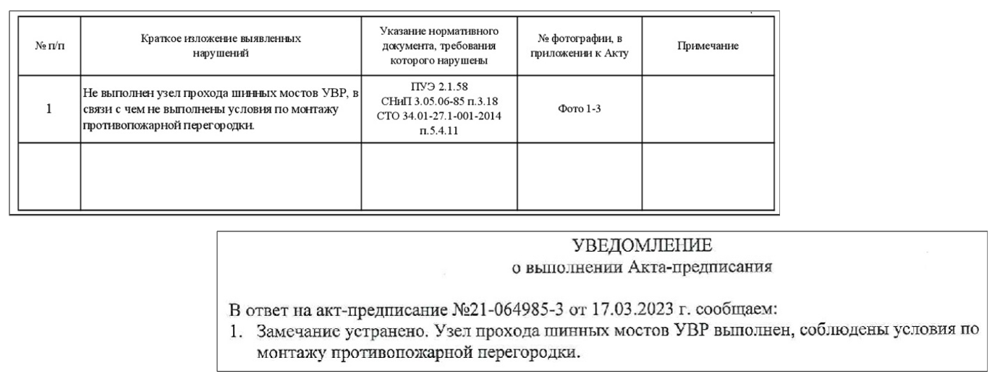

Вспоминаем состав ИД

На курсе разберем, что проверить перед передачей документов на проверку, как сверить сметы с исполнительной документацией и корректно ответить на замечания заказчика. Вы узнаете, как правильно оформить и передать комплект на подпись.
В каждом уроке — реальные примеры из практики подрядчиков и типичные ошибки, которые совершают многие. Все знания закрепим на практике, чтобы сдача объемов проходила с первой попытки.
Готовим пакет документов
В своей работе я регулярно принимаю исполнительную документацию на разных объектах. И могу сказать одно: ошибки в оформлении у всех одинаковые.
Чтобы говорить с вами на одном языке, давайте повторим состав исполнительной документации, которая подтверждает выполненные объемы работ.
Но если в договоре подряда установлены дополнительные требования к составу ИД, то необходимо предусмотреть и их наличие.
Не забывайте про ЛНД. Если она утверждена политикой компании, проверка комплекта будет проводиться строго по ее перечню.
Часто состав ИД дополняется следующими документами:
- Реестр ИД
- Ведомость объемов выполненных работ
- Приказы на ответственных лиц со стороны подрядчика
- Актуальная выписка из СРО (не позднее шести месяцев от даты предъявляемых работ)
- Уведомление о включении сведений в НРС ответственного представителя подрядчика ответственного за проведение СК
При комплектации тома ИД руководствуйтесь именно таким порядком, если иное не предусмотрено договором. Так у заказчика может быть требование о комплектации тома в порядке «АОСР+схема+паспорт» на вид работ или «все АОСР+все схемы+все паспорта».
Используйте «Метод стройконтроля». Станьте на место инженера, который будет проверять вашу документацию. Проверяйте ИД критично — так вы сами заметите ошибки, которые все равно увидит стройконтроль. Когда я разбираю ошибки вместе с инженером подрядчика, прошу представить себя на моем месте. Почти всегда он сам находит недочеты.
При проверке первых документов у меня появились замечания. Попробуйте найти их сами. Выполните упражнение и определите, какие ошибки допустил подрядчик при оформлении первых листов тома ИД.
Источник и ограничения: для просмотра требуется сеть и доступ к внешней площадке.
При комплектации тома исполнительной документации ориентируйтесь на порядок, установленный договором или ЛНД. Стройконтроль часто возвращает комплект еще до проверки, если порядок нарушен.
Локальные требования могут быть разными:
- «АОСР + схема + паспорт» на каждый вид работ;
- «все АОСР + все схемы + все паспорта» в одном томе;
- отдельные тома для АОСР, схем и паспортов.
Если порядок договором не предусмотрен, но легче и нагляднее выглядит порядок «АОСР+схема+паспорт» – представитель Заказчика сразу проверит даты, материалы и объем выполненных работ.
Дам еще один практический совет. После формирования комплекта ИД обязательно проверьте правильность заполнения АОСР.
Я часто нахожу такие ошибки:
- несовпадение дат в паспорте и АОСР,
- различия в объемах между паспортом и исполнительной схемой.
Чтобы вы понимали, в каких случаях будут выставлены замечания, выполните упражнение. Для этого нажмите на каждый документ, чтобы увидеть его полный размер, и соотнесите с ошибками.
Источник и ограничения: для просмотра требуется сеть и доступ к внешней площадке.
Главное при формировании пакета ИД — устранение замечаний по предписаниям. Если по результатам проверки объекта составлен акт-предписание, все указанные нарушения нужно устранить до сдачи объема работ.
Прораб может показать устранение на повторном осмотре, но акт об устранении предписания должен быть направлен заранее — до подачи выполнения или вместе с передачей ИД на проверку. Без этого уведомления у стройконтроля есть основания не принять объем.

Теперь вы научились проверять свою ИД перед передачей комплекта на проверку. Но это только половина пути к успешной защите объемов работ. Переходите к следующему уроку. Я расскажу вам о том, как проверить один из самых важных документов в вашем выполнении – смету.
Источник и ограничения: для просмотра требуется сеть и доступ к внешней площадке.
{kind=link}